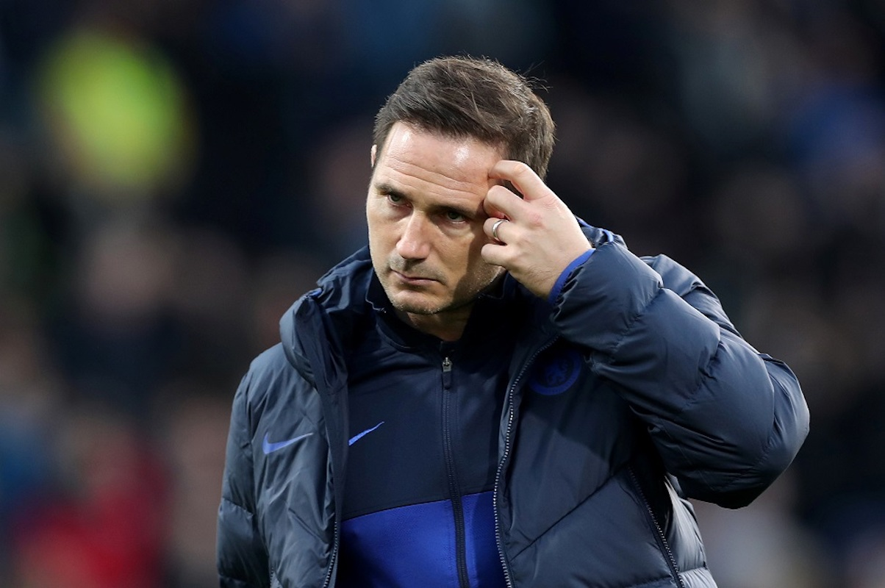

-
What Will the Blues Look Like for the 2020-21 Campaign?
by Grant Ho - May 27, 2020
|
grantho@umich.edu

Chelsea seems to be on the brink of something special. In a year believed to be a rebuilding year, Frank Lampard currently has Chelsea sitting in fourth place, third place if you disregard Manchester City. Obviously Chelsea will not be able to catch Liverpool, but a Champions League spot seems more than likely. Nate Silver and his team at FiveThirtyEight have the Blues with a 79% chance of qualifying for the UCL. With a presumed Champions League place for the season of 2020-21, the $113 million from the Eden Hazard transfer fee, and a talent pool of young players, what will Chelsea look like at the start of next season?
For the purposes of this article, we’ll assume that Chelsea will use approximately $120 million in the market.
Lampard came into this season with a transfer ban imposed on the club until it was lifted in the winter transfer window where he signed Ajax winger Hakim Ziyech for $44.00 million. With this transfer this leaves $76 million for the remaining budget. This season, Lampard most frequently used a 4-3-3 formation with other variations including a 4-2-3-1. Lampard likes to build possession from the defensive third and likes to generate goal-scoring opportunities from his wingers or full-backs crossing the ball in. Defensively, Lampard uses an energetic pressing system that often leaves the defense vulnerable. Lampard’s biggest needs are a goalkeeper, center midfielder, and striker.

Since Kepa’s infamous refusal to be substituted in the EFL Cup, Chelsea supporters and Lampard have turned on the world’s most expensive keeper. In recent games Lampard has started the 38-year-old Willy Caballero over Kepa. Clearly Caballero is not in the long term plans for Lampard trying to build a young team and many reports have linked Ajax’s Andre Onana to the Bridge.
Chelsea should be aggressive in going for Onana especially with Barcelona reportedly interested too. Chelsea would make more sense for the young Cameroonian in terms of playing minutes, but he has roots in Barcelona. Assuming Chelsea can make this deal, this leaves only $40 million in the budget with huge holes if players do leave this summer.
Onana is a top-tier goalie who would bring a championship mentality, experience in the Champions League, and leadership to a young defense in Reece James, Zouma, and Tomori. Analysts have commented on Onana’s solid positioning and athletic abilities. Moreover, the Cameroonian conceded 0.86 goals per game in this season where the expected conceded goals value is 1.03. Onana also has no problem with the ball at his feet. On average he played 12.86 short passes per game in the 2019-20 season, while 97.4% of them were successful. While Onana’s has been criticized for his long-ball passing abilities, a strength of Kepa, Chelsea would be remised to pass up on the $39.6 million 24-year-old keeper. Not to mention Onana found a role as a distributor with Ajax playing out of the back, a role perfectly suited for Lampard and his team. We saw how Allison and Ederson were the missing links for Liverpool and Man City respectively, maybe Onana is the answer for Chelsea.
Many reports have indicated that Willian and Pedro will depart the Bridge this summer. While Chelsea has lots of talent and potential at these positions in Mount, Pulisic, Hudson-Odoi, and newly signed Ziyech, more depth won't hurt. Hometown boy Jadon Sancho has been linked with Chelsea and would fit perfectly in Lampard’s system. He is a talented dribble that will draw defenders away from the middle creating space for the likes of Kante, Kovacic, and Abraham in the middle. However, Sancho has a $128.70 million price tag. On top of that, Manchester United who has a larger budget is keen on signing the young Englishman. While Sancho would fit Lampard’s system well and Chelsea supporters would love a good hometown story, it is most likely out of reach for Chelsea. The Blues do have higher priorities than a winger and if Mount, Pulisic, Hudson-Odoi, and Ziyech are the only options, Chelsea still can have success.
N’golo Kante… badabababa… The 2016-17 PFA winner has been on Europe’s radar since his top-class season. Add a World Cup win and Europa league win to his resume and the likes of Barcelona will be interested. It’s sad for Chelsea fans, but Kante might be out the door with Chelsea aiming to sell him for around $85 million. If he does in fact leave, this creates a huge hole in the midfield. Also, with Jorginho rumored to reunite with his former manager Sarri at Juventus, this leaves two starting spots empty. On the roster, Chelsea has Loftus-Cheek, Barkley, Kovacic, and Billy Gilmour. Loftus-Cheek always seems to be injured and Barkley is always inconsistent. This leaves Kovacic, a clear first pick, and young Scotsman Billy Gilmour. Gilmour impressed to say the least in his limited appearances this season. Lampard has done a great job developing youth and adding them to the first team. It wouldn’t be surprising to see Gilmour becoming a consistent starter.
Assuming the loss of Jorginho and Kante, this would give Chelsea an additional $100 million to the transfer budget with a total of $140 million, maybe allowing for a Jadon Sancho pursuit, but again, bigger wholes are needed especially in the midfield. Chelsea has been linked with West Ham midfielder Declan Rice, Manchester United CAM Angel Gomes, and PSG midfielder Thomas Meunier. If Chelsea signs one of these three, this would give Lampard more depth and versatility. A N’golo Kante loss is significant and these three cannot replace him, but there is room for growth. The transfer making the most headway is Angel Gomes the 19-year-old valued at around $4 million who would be an interesting replacement for Jorginho. If this transfer happens we might see Kovacic and Gilmour in the deeper roles and Gomes eventually filling that number 10 role. Coutinho has been linked with Chelsea, but it’s hard to see him fitting in with Lampard’s style and frankly the new Chelsea culture. If no players are signed, Mount could return to his number 10 position that Lampard had him play at Derby.
Next is the defense. In defense, we have captain Azpilicueta, Tomori, Zouma, Rudiger, and Reece James who Lampard seems to favor. Defensively Chelsea is relatively young and has a lot of room to grow. On the bench, there’s Emerson, Alsonso, and Christensen. No new signings are needed, but if Chelsea can get a large presence, a strong aerial threat, and vocal center back like a Kalidou Koulibaly this would only elevate Chelsea to higher levels. Chelsea have also been linked with Dortmund defender Achraf Hakimi, but the 21-year-old wants to return to Real Madrid. Maybe Chelsea could bring back Ake with a $40 million buy-back clause, but it is not urgent.
Finally, a striker. Tammy Abraham surprised most. Abraham currently sits tied for eighth in the Golden Boot race with 13 goals. Clearly he is in Lampard’s long-term plan with lots of room to grow. On the bench you have super-sub Giroud and Michy Batshuayi who will most likely be playing on a different team whether that be on loan or permanently. One player that is a must for Chelsea is Lyon striker Moussa Dembele. Timo Werner has been rumored with the Blues, but many sources indicate Liverpool as his destination. Dembele netted 16 goals in Ligue 1’s abbreviated season. Dembele is an excellent goalscorer, moves off the ball well, and his work rate is incredible. Dembele is desperate to play Champions League football and Chelsea need to score more goals. At the age of 23 and transfer value of $44.00 million Chelsea should go after the energetic Lyon player. He would fit well in Lampard’s high pressure system and could play behind Tammy Abraham who could hold the ball with Demebele making overlapping runs. With these two and the strong wingers, the Chelsea attack could be lethal. If this signing goes through, this leaves around $95 million in the budget to take on prospects and add depth whether that be Declan Rice, Meunier, Edison Cavani, or other rumored transfers.
Of course it is hard to predict the transfer mill with the Coronavirus so it will be interesting to see what happens when the summer transfer begins. If the transfer targets do end up in West London next year, here are some starting lineups we can expect with other possible variations.
All transfer values from Transfermarkt